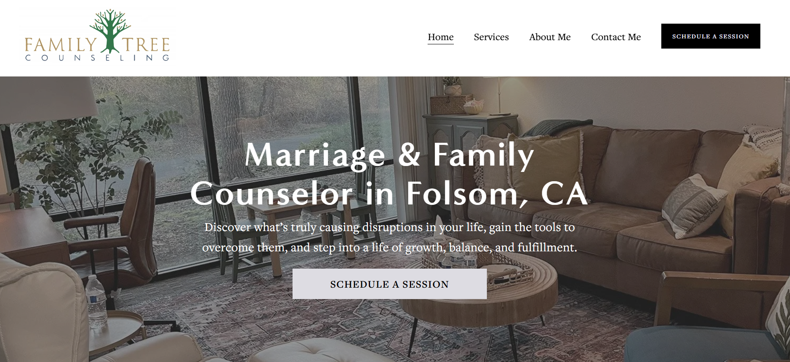
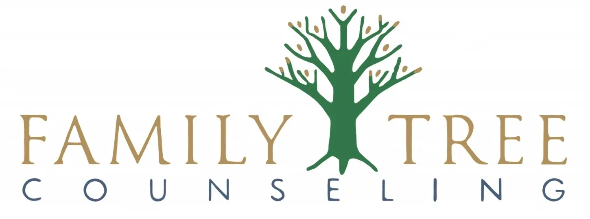
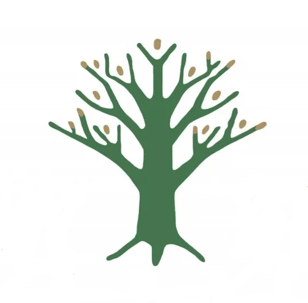

Folsom Family Tree Counseling — Site Migration & SEO
I partnered directly with the owner to recover their domain, migrate off a legacy host after pages were lost, and rebuild a modern, clean website focused on driving bookings. I streamlined the messaging pipeline, set up tracking, and executed local SEO to increase visibility in the greater Folsom area.
Screens

Branding & Logo Work
Two deliverables: a full horizontal lockup and a square mark, exported as high-resolution PNGs.


Overview
Problem
The owner’s long-time hosting provider lost multiple pages and could not restore them. The domain and site were partially broken, and inquiries dropped.
Outcome
Recovered the original domain, migrated to a new platform, rebuilt the site with a clean layout and clear booking paths, restored lead flow, and set up sustainable SEO and tracking.
Responsibilities
- Coordinated the migration plan; exported assets, rebuilt core pages, and mapped redirects.
- Recovered the client-owned domain and updated DNS for the new host.
- Modernized the UI with a focus on conversion (sticky CTAs, clear services, trust markers).
- Streamlined messaging: contact form → filtered inbox; created a simple spreadsheet process to track new client correspondence.
- Implemented local SEO: keyword research for Folsom area, on-page updates, citations, and Google Business Profile.
- Set up GA4 + Search Console; monitored index coverage and search queries.
- Wrote all website copy end-to-end; collaborated with the owner on tone/wording and iterated quickly on requested changes.
- Reworked the brand mark: redrew logo as crisp SVG, defined palette/typography, and exported favicon/social images.
Approach
- Audit & recovery: inventory remaining content, export media, confirm domain ownership, and fix DNS.
- Rebuild: replicate core information architecture, simplify navigation, and implement a clean theme.
- Brand refresh: redraw logo in vector, define palette/type system, and generate web assets (SVG/PNG, favicon, OG image).
- Conversion: write concise copy, prominent “Book / Contact” CTAs, and clear next steps.
- Messaging: configure contact form routing, spam protection, and a shared tracking spreadsheet.
- SEO: local keyword research, on-page structure, GBP optimization, citations, and sitemap/robots.
- Verification: Lighthouse, mobile responsiveness, form delivery tests, and analytics checks.
SEO & Marketing
Outcomes & verification (privacy-safe)
- Domain recovery: stable DNS and SSL on new host.
- Booking focus: CTAs and contact flows surfaced across the site.
- Local SEO foundations: Google Business Profile, consistent NAP, on-page keywords for “counseling in Folsom,” citations, sitemap, and Search Console.
- Brand consistency: refreshed logo, palette, and typography across templates and metadata (favicon/OG).
- Mobile-optimized: pages responsive and fast on phones.
How we measured success
- Form-submission tracking and inbox delivery checks.
- Search Console for index coverage and queries.
- Lighthouse performance and accessibility checks.
Quantitative metrics are available on request with client approval.
SEO roadmap (process followed)
-
Keyword discovery
- Listened to client goals and customer language.
- Used Google Suggest/Trends to find local intent terms.
-
Keyword theming
- Grouped terms into logical service/topic clusters.
- Mapped primary/secondary keywords per page.
-
Site architecture
- Clear nav; dedicated page per theme/service.
- Cross-linked relevant pages; obvious contact paths.
-
Content creation
- I wrote all copy—plain language, headings > paragraphs, and trust markers.
- Partnered with the owner to match voice/tone; revised until approved.
-
Content optimization
- Fast loads and mobile friendliness; image optimization.
- Titles/meta, internal links, schema, canonical URLs.
-
Promotion & monitoring
- Google Business Profile updates, citations, social sharing.
- GA4 + Search Console monitoring and periodic tune-ups.
Testing
Strategy: manual scripts + targeted unit checks for helpers and form handlers; end-to-end smoke tests for contact and booking flows.
- Contact form validation and delivery (required fields, anti-spam, success/failure messages).
- Responsive behavior across breakpoints; keyboard navigation on key pages.
- Redirects for legacy URLs; 404 checks; sitemap submission.